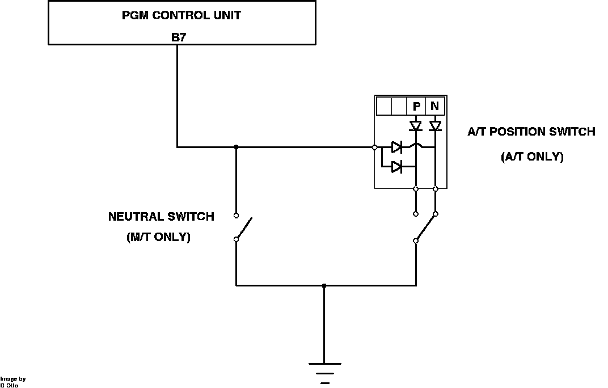

Neutral Safety Switch: Description and Operation
A/T Position And M/T Neutral Switch Schematic:

The M/T neutral switch signal is provided by a transaxle mounted switch. The switch grounds ECU terminal B7 whenever the transmission is in the neutral position. The signal is used for fuel cut-off and cruise control operation.